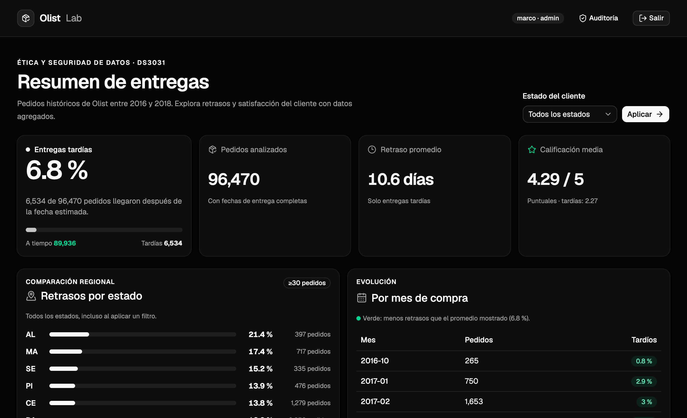
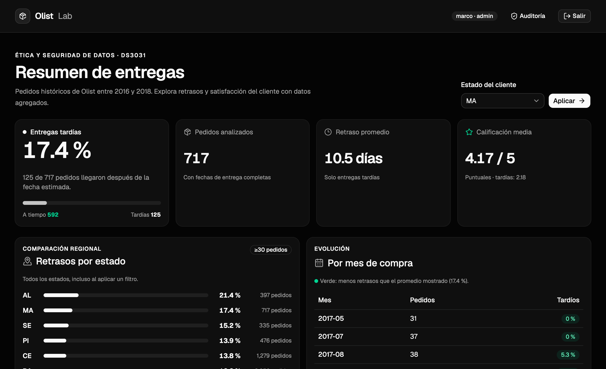
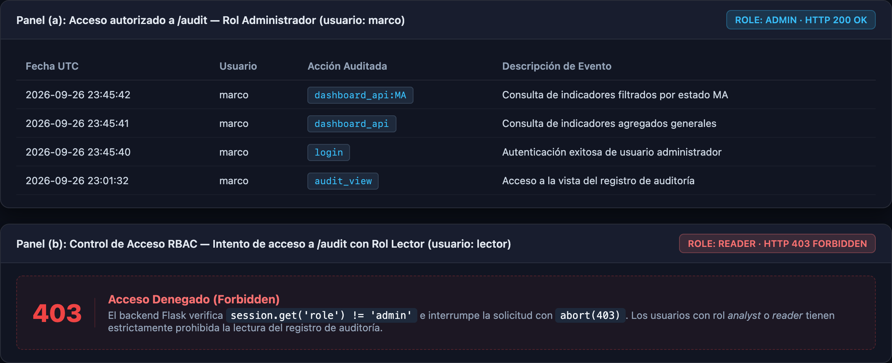
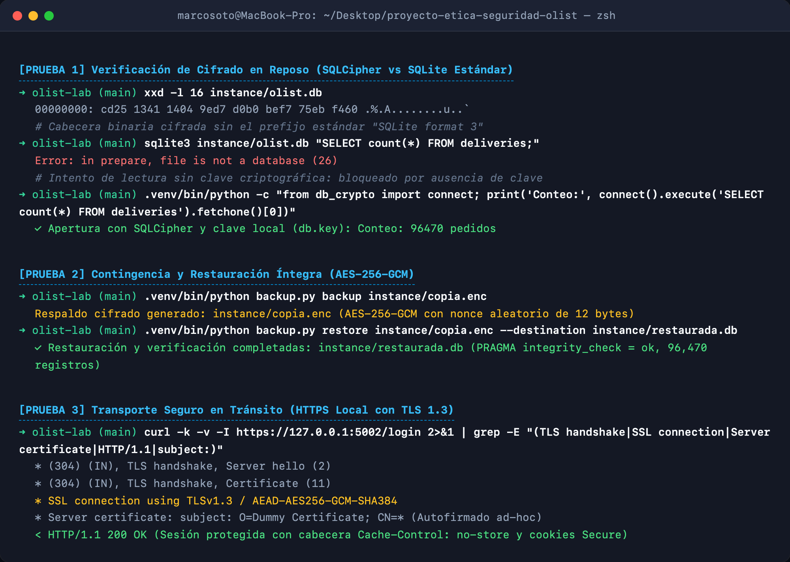

1. Resumen ejecutivo
Desarrollamos un prototipo académico para analizar las entregas tardías del conjunto histórico de comercio electrónico de Olist. Buscamos identificar segmentos que merecen una investigación logística y describir cómo varía la calificación de la compra según el cumplimiento de la fecha estimada de entrega. Para ampliar el análisis, incorporamos una segunda fuente: el calendario oficial de feriados nacionales de Brasil de 2018.
De los 99 441 pedidos del archivo original, seleccionamos 96 470 pedidos entregados con fechas y estado del cliente disponibles. Entre ellos, 6 534 llegaron después de la fecha estimada: 6.8 %. El retraso medio de esos pedidos fue de 10.6 días. La calificación promedio, calculada con las reseñas disponibles, fue de 4.29/5 para las entregas puntuales y 2.27/5 para las tardías. La comparación es descriptiva y no demuestra causalidad.
Implementamos una base SQLite cifrada con SQLCipher, un backend Flask y un panel React con componentes shadcn/ui. El sistema incluye autenticación, roles RBAC (admin, analyst, reader), registro de auditoría, HTTPS local y respaldos autenticados con AES-256-GCM. Reconocemos que el ZIP original sigue sin cifrar y que el modo HTTP local no protege el tráfico.
2. Introducción y caso de negocio
2.1 Problema y oportunidad
En una operación de comercio electrónico, conocer solo el número total de pedidos no permite priorizar la revisión de demoras. Un indicador global puede ocultar diferencias entre estados o meses, mientras que una lista de pedidos individuales expondría datos que el analista no necesita. Se plantea una vista agregada que permita responder: ¿cuál fue la tasa de tardanza?, ¿en qué grupos históricos fue mayor?, y ¿cómo varió la calificación observada entre pedidos puntuales y tardíos?
2.2 Objetivos
- Integrar el dataset Olist con una fuente complementaria verificable de feriados (Portaria n.º 468/2017).
- Definir KPIs con denominadores explícitos y explorar variaciones por estado y mes.
- Implementar una base de datos relacional cifrada, un backend seguro y una interfaz web con control de acceso.
- Demostrar controles de autenticación, auditoría, transporte HTTPS local y recuperación mediante respaldo cifrado.
- Documentar riesgos, límites éticos, respuesta a incidentes y lecciones aprendidas.
3. Fuentes de datos, alcance y calidad
El Brazilian E-Commerce Public Dataset by Olist reúne archivos CSV de pedidos, clientes, ítems y reseñas. La copia ZIP utilizada tiene SHA-256 967E41E04FC306FE604E2A693F488995A8B41E5047418F8A5C8E4ABD6DECA784 y se conserva localmente en data/olist.zip, fuera del repositorio Git.
La segunda fuente es la Portaria n.º 468/2017 de Brasil, integrando los feriados nacionales oficiales de 2018 para evaluar si las compras efectuadas en días feriados exhibían un comportamiento diferenciado.
| Indicador | Resultado | Base de cálculo |
|---|---|---|
| Pedidos analizados | 96 470 | Entregados con fechas completas |
| Entregas tardías | 6 534 (6.8 %) | 6 534 / 96 470 |
| Retraso medio entre tardías | 10.6 días | Solo 6 534 pedidos demorados |
| Calificación media puntual | 4.29 / 5 | 89 443 reseñas disponibles |
| Calificación media tardía | 2.27 / 5 | 6 381 reseñas disponibles |
4. Análisis descriptivo y utilidad para el negocio
El análisis regional muestra variaciones marcadas entre unidades federativas: estados como Alagoas (AL) registraron 21.4 % de tardanza y Maranhão (MA) 17.4 %, frente a tasas inferiores al 6 % en los estados del sureste (São Paulo y Paraná).
La comparación exploratoria por fechas de compra en feriados nacionales de 2018 evidenció una tasa tardía del 12.1 % (23 de 190 pedidos) frente a 6.2 % en días no feriados. Sin embargo, dado el reducido tamaño muestral de pedidos en feriados en la copia procesada, el informe señala de forma explícita que esta diferencia no constituye una relación causal demostrada.
5. Requerimientos y diseño funcional
La arquitectura del sistema desacopla la capa de presentación de la capa de datos:
- Frontend: SPA reactiva desarrollada en React con TypeScript, Vite y componentes accesibles de shadcn/ui. Proporciona filtros dinámicos por estado sin recargar la página.
- Backend: Servicio API en Python con Flask, implementando sesiones firmadas con HMAC, protección CSRF y cabeceras de endurecimiento (
Cache-Control: no-store). - Capa de persistencia: SQLite operacional cifrado mediante SQLCipher con algoritmo AES-256 en modo CBC e índices optimizados en columnas de filtrado.
6. Seguridad y consideraciones éticas
El diseño de seguridad responde a un modelo de amenazas local enfocado en la minimización de datos personales y la contención de accesos no autorizados:
- Cifrado en reposo: Se protegen las páginas de base de datos con clave de 256 bits, impidiendo la lectura directa del archivo de base con herramientas SQLite estándar.
- Control de acceso basado en roles (RBAC): Separación entre
admin(acceso a panel y visor de auditoría),analyst(acceso al panel con filtros) yreader(consulta agregada básica, denegación estricta de auditoría con HTTP 403). - Trazabilidad de auditoría: Registro persistente de eventos clave (inicios de sesión, consultas analíticas con parámetros y accesos administrativos) con marcas de tiempo en UTC.
- Principio ético de minimización: Se excluyeron intencionalmente del modelo relacional los nombres de clientes, domicilios exactos, prefijos postales y mensajes de texto libre de reseñas.
7. Políticas de uso y directrices para colaboradores
Se establecieron normas estrictas de gobernanza en el repositorio para evitar fugas de información y garantizar la reproducibilidad académica:
- Exclusión permanente en
.gitignorede carpetas sensibles (data/,instance/), claves (*.key), bases (*.db) y respaldos (*.enc). - Cada desarrollador genera sus propias claves locales e inicializa su usuario administrador de forma independiente.
- Prohibición estricta de comprometer contraseñas en claro o credenciales en el historial de Git.
8. Respuesta ante incidentes y plan de contingencia
El plan de contingencia define procedimientos técnicos reproducibles mediante backup.py:
- Generación de respaldo: Creación de una instantánea cifrada y autenticada con AES-256-GCM (
instance/copia.enc), protegiendo la confidencialidad e integridad física de la copia. - Procedimiento de restauración: Desencriptación controlada y validación de consistencia estructural con
PRAGMA integrity_check, verificando la recuperación exacta de los 96 470 registros en una base de datos de contingencia.
9. Implementación y evidencias visuales
Las siguientes capturas documentan la verificación visual de la plataforma en funcionamiento, el comportamiento reactivo de los filtros analíticos, la efectividad del control de acceso RBAC y las pruebas técnicas de seguridad en consola. (Haz clic en cualquier captura para ampliar)
1 Panel General: KPIs y Detalle de Fuentes
Vista global
Detalle y validación: Interfaz interactiva desplegada en React tras autenticarse con el usuario administrador (marco · admin). Exhibe los 4 KPIs clave: 6.8 % de entregas tardías, 96 470 pedidos analizados, 10.6 días de retraso promedio y calificaciones de 4.29/5 (puntual) vs. 2.27/5 (tardía), además de la comparación regional y el pie con las fuentes oficiales. Esta vista confirma que los datos se presentan agregados, sin exponer nombres, direcciones ni identificadores de clientes.
2 Filtro por Estado: Reactividad y Consistencia Analítica
Estado MA
Detalle y validación: Al aplicar el filtro para el estado de Maranhão (MA), la aplicación actualiza las cifras mediante la API: el total de pedidos analizados pasa a 717, la tasa de tardanza sube a 17.4 % (125 entregas tardías), el retraso medio se sitúa en 10.5 días y la satisfacción desciende a 4.17/5 (puntuales) y 2.18/5 (tardíos). La tabla mensual inferior se ajusta automáticamente para mostrar únicamente la serie temporal de este estado, verificando la consistencia de las consultas parametrizadas en el backend SQL sin riesgo de inyecciones.
3 Control de Acceso (RBAC) y Registro de Auditoría
Admin vs Reader
Detalle y validación: En el panel superior (a), la ruta administrativa /audit es accesible para el rol admin (marco), listando en orden cronológico inverso los eventos de auditoría: marca de tiempo UTC, usuario y acción (login, dashboard_api:MA, audit_view). En el panel inferior (b), se evidencia la restricción de privilegios: cuando un usuario con rol reader (lector) intenta ingresar a dicha ruta, Flask bloquea la solicitud y devuelve un código HTTP 403 Forbidden, impidiendo el acceso a los registros de auditoría a roles no autorizados.
4 Pruebas Técnicas: Cifrado en Reposo, Contingencia y HTTPS
Consola de seguridad
Detalle y validación: En la sesión de consola se comprueban tres mecanismos de seguridad implementados:
1) Cifrado en reposo (SQLCipher): la lectura inicial de los primeros 16 bytes de instance/olist.db mediante xxd muestra bytes aleatorios y confirma la ausencia de la cadena legible SQLite format 3. El cliente estándar sqlite3 rechaza el archivo con Error: file is not a database (26), mientras que la conexión mediante SQLCipher con la clave local de 256 bits (instance/db.key) abre la base y recupera los 96 470 registros.
2) Contingencia y recuperación: ejecución de backup.py backup, generando un respaldo cifrado y autenticado con AES-256-GCM (instance/copia.enc). Su posterior restauración con backup.py restore comprueba la integridad estructural (integrity_check = ok) y confirma la recuperación exacta de las 96 470 filas en una base independiente.
3) Protección en tránsito (HTTPS local): negociación TLS 1.3 con cifrado AES-256-GCM y certificado autofirmado ad-hoc en Flask, validando la entrega de cabeceras de seguridad (Cache-Control: no-store y cookies con atributo Secure).
10. Recomendaciones de protección futura
- Custodia externa de secretos: En la configuración actual, la clave criptográfica se almacena en el mismo sistema de archivos que la base operativa. Para un entorno productivo se debe integrar un gestor de secretos dedicado (HashiCorp Vault o AWS Secrets Manager) con políticas de rotación periódica.
- Certificados TLS de CA pública: Migrar del certificado temporal autofirmado a certificados validados por una autoridad de certificación reconocida (Let's Encrypt), eliminando advertencias en clientes y garantizando confidencialidad en redes abiertas.
- Definición de RPO y RTO: Establecer objetivos formales de tiempo de recuperación y punto de recuperación coordinados con las áreas operativas del negocio.
11. Lecciones aprendidas y retrospectiva del equipo
11.1 Lecciones técnicas y analíticas
La principal lección técnica es que un dataset público puede contener columnas innecesarias para responder la pregunta de negocio. Definir primero el denominador del KPI permitió importar menos campos y detectar los 646 pedidos sin reseña. La comparación con feriados mostró que una cifra atractiva puede ser engañosa cuando los tamaños de grupo son muy distintos. En seguridad, restaurar una copia aportó evidencia más contundente que solo generar el archivo cifrado; asimismo, evidenció el límite de custodiar la clave en el mismo equipo.
11.2 Retrospectiva del trabajo conjunto
El proyecto fue desarrollado conjuntamente por Ronal Jesus Condor Blas y Marco Soto Maceda. Como mejoras de trabajo en equipo para proyectos futuros se propone:
- Llevar un registro estructurado de decisiones técnicas y de arquitectura para mantener la trazabilidad de cada cambio.
- Establecer un flujo sistemático de revisión cruzada de código (peer review) antes de integrar cambios en el importador y en los controles de acceso.
- Ejecutar pruebas conjuntas periódicas para verificar la restauración de respaldos y el comportamiento ante incidentes.
- Formalizar una lista de verificación previa a la entrega para constatar la exclusión de claves y la vigencia de la documentación técnica.
12. Conclusiones y referencias
El prototipo responde al caso de negocio con métricas históricas verificables y una interfaz agregada. La línea de base de 6.8 % de entregas tardías y la diferencia de puntuaciones permiten priorizar preguntas para una investigación logística posterior, pero no establecen causas ni metas operativas actuales. La integración de feriados añade una segunda fuente y demuestra por qué los grupos pequeños y las comparaciones no controladas requieren cautela.
En materia de seguridad, la solución implementa controles visibles de autenticación, roles, auditoría, base operativa cifrada con SQLCipher, HTTPS local y respaldo cifrado con restauración. El informe distingue estas condiciones de la hoja de ruta futura. Por ello, el resultado es una demostración académica funcional, no un sistema listo para operar con datos personales reales en producción.
- • Olist & Kaggle. Brazilian E-Commerce Public Dataset by Olist. SHA-256:
967e41e0... - • Ministério do Planejamento, Desenvolvimento e Gestão de Brasil. Portaria n.º 468, de 22 de dezembro de 2017. Feriados e pontos facultativos de 2018.